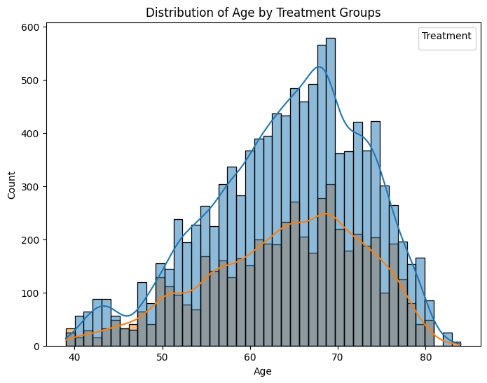

Project: Hypothesis Testing in Healthcare- Drug Safety
A pharmaceutical company GlobalXYZ has just completed a randomized controlled drug trial. To promote transparency and reproducibility of the drug’s outcome, they (GlobalXYZ) have presented the dataset to your organization, a non-profit that focuses primarily on drug safety.
The dataset provided contained five adverse effects, demographic data, vital signs, etc. Your organization is primarily interested in the drug’s adverse reactions. It wants to know if the adverse reactions, if any, are of significant proportions. It has asked you to explore and answer some questions from the data.
The dataset drug_safety.csv was obtained from Hbiostat courtesy of the Vanderbilt University Department of Biostatistics. It contained five adverse effects: headache, abdominal pain, dyspepsia, upper respiratory infection, chronic obstructive airway disease (COAD), demographic data, vital signs, lab measures, etc. The ratio of drug observations to placebo observations is 2 to 1.
For this project, the dataset has been modified to reflect the presence and absence of adverse effects adverse_effects and the number of adverse effects in a single individual num_effects.
The columns in the modified dataset are:
| Column | Description |
|---|---|
sex |
The gender of the individual |
age |
The age of the individual |
week |
The week of the drug testing |
trx |
The treatment (Drug) and control (Placebo) groups |
wbc |
The count of white blood cells |
rbc |
The count of red blood cells |
adverse_effects |
The presence of at least a single adverse effect |
num_effects |
The number of adverse effects experienced by a single individual |
The original dataset can be found here.
Your organization has asked you to explore and answer some questions from the data collected. See the project instructions.
Your task
- Determine if the proportion of adverse effects differs significantly between the Drug and Placebo groups, saving the p-value as a variable called two_sample_p_value.
- Find out if the number of adverse effects is independent of the treatment and control groups, saving as a variable called num_effects_p_value containing a p-value.
- Examine if there is a significant difference between the ages of the Drug and Placebo groups, storing the p-value of your test in a variable called age_group_effects_p_value.
# Import packages
import numpy as np
import pandas as pd
from statsmodels.stats.proportion import proportions_ztest
import pingouin
import seaborn as sns
import matplotlib.pyplot as plt
# Load the dataset
drug_safety = pd.read_csv("drug_safety.csv")
# Start coding here...drug_safety.tail(20)| age | sex | trx | week | wbc | rbc | adverse_effects | num_effects | |
|---|---|---|---|---|---|---|---|---|
| 16083 | 62 | female | Placebo | 8 | 4.7 | 3.6 | No | 0 |
| 16084 | 58 | male | Placebo | 0 | 9.1 | 5.1 | No | 0 |
| 16085 | 58 | male | Placebo | 1 | NaN | NaN | Yes | 1 |
| 16086 | 58 | male | Placebo | 12 | 7.2 | 5.2 | No | 0 |
| 16087 | 58 | male | Placebo | 16 | NaN | NaN | Yes | 1 |
| 16088 | 58 | male | Placebo | 2 | 6.9 | 5.1 | No | 0 |
| 16089 | 58 | male | Placebo | 20 | NaN | NaN | Yes | 1 |
| 16090 | 58 | male | Placebo | 4 | 10.3 | 5.3 | Yes | 1 |
| 16091 | 58 | male | Placebo | 8 | 6.4 | 5.1 | No | 0 |
| 16092 | 68 | male | Drug | 0 | 5.7 | 4.6 | No | 0 |
| 16093 | 68 | male | Drug | 1 | NaN | NaN | Yes | 1 |
| 16094 | 68 | male | Drug | 2 | NaN | NaN | No | 0 |
| 16095 | 78 | male | Placebo | 0 | 7.2 | 5.0 | No | 0 |
| 16096 | 78 | male | Placebo | 1 | NaN | NaN | Yes | 1 |
| 16097 | 78 | male | Placebo | 12 | 6.5 | 4.9 | No | 0 |
| 16098 | 78 | male | Placebo | 16 | NaN | NaN | Yes | 1 |
| 16099 | 78 | male | Placebo | 2 | 7.5 | 4.9 | No | 0 |
| 16100 | 78 | male | Placebo | 20 | NaN | NaN | Yes | 1 |
| 16101 | 78 | male | Placebo | 4 | 6.4 | 4.8 | No | 0 |
| 16102 | 78 | male | Placebo | 8 | 7.8 | 4.8 | No | 0 |
drug_safety.columnsIndex(['age', 'sex', 'trx', 'week', 'wbc', 'rbc', 'adverse_effects',
'num_effects'],
dtype='object')drug_safety.info()<class 'pandas.core.frame.DataFrame'>
RangeIndex: 16103 entries, 0 to 16102
Data columns (total 8 columns):
# Column Non-Null Count Dtype
--- ------ -------------- -----
0 age 16103 non-null int64
1 sex 16103 non-null object
2 trx 16103 non-null object
3 week 16103 non-null int64
4 wbc 9128 non-null float64
5 rbc 9127 non-null float64
6 adverse_effects 16103 non-null object
7 num_effects 16103 non-null int64
dtypes: float64(2), int64(3), object(3)
memory usage: 1006.6+ KBdrug_safety.describe()| age | week | wbc | rbc | num_effects | |
|---|---|---|---|---|---|
| count | 16103.000000 | 16103.00000 | 9128.000000 | 9127.000000 | 16103.000000 |
| mean | 64.117556 | 7.74098 | 7.340557 | 4.672784 | 0.101596 |
| std | 8.783207 | 6.94350 | 1.996652 | 0.458520 | 0.323181 |
| min | 39.000000 | 0.00000 | 1.800000 | 2.100000 | 0.000000 |
| 25% | 58.000000 | 1.00000 | 6.000000 | 4.400000 | 0.000000 |
| 50% | 65.000000 | 4.00000 | 7.100000 | 4.700000 | 0.000000 |
| 75% | 71.000000 | 12.00000 | 8.400000 | 5.000000 | 0.000000 |
| max | 84.000000 | 20.00000 | 26.500000 | 7.600000 | 3.000000 |
Determine if the proportion of adverse effects differs significantly between the Drug and Placebo groups, saving the p-value as a variable called two_sample_p_value.
import pandas as pd
from statsmodels.stats.proportion import proportions_ztest
# Creating a contingency table of adverse effects by treatment groups
contingency_table = pd.crosstab(drug_safety['adverse_effects'], drug_safety['trx'])
#print(contingency_table)
# Extracting the counts of adverse effects for Drug and Placebo groups
adverse_effects_drug = contingency_table.loc['Yes', 'Drug'] # Assuming '1' represents presence of adverse effects
adverse_effects_placebo = contingency_table.loc['Yes', 'Placebo']
# Extracting the total counts for Drug and Placebo groups
total_drug = contingency_table['Drug'].sum()
total_placebo = contingency_table['Placebo'].sum()
# Performing the two-sample proportions z-test
count = [adverse_effects_drug, adverse_effects_placebo]
nobs = [total_drug, total_placebo]
two_sample_z_stat, two_sample_p_value = proportions_ztest(count, nobs)
# Display the p-value
print(f"The p-value for the two-sample proportions z-test is: {two_sample_p_value}")The p-value for the two-sample proportions z-test is: 0.9639333330262475two_sample_p_value0.9639333330262475Find out if the number of adverse effects is independent of the treatment and control groups, saving as a variable called num_effects_p_value containing a p-value.
expected,observed,stats = pingouin.chi2_independence(data=drug_safety,x='num_effects',y='trx')num_effects_p_value = stats["pval"][0]
#print(stats)Inspecting whether age is normally distributed
import seaborn as sns
import matplotlib.pyplot as plt
# Creating a histogram to visualize age distribution by treatment groups
plt.figure(figsize=(8, 6))
sns.histplot(data=drug_safety, x='age', hue='trx', kde=True)
plt.title('Distribution of Age by Treatment Groups')
plt.xlabel('Age')
plt.ylabel('Count')
plt.legend(title='Treatment')
plt.show()
# Performing Shapiro-Wilk test for normality by treatment groups (trx)
shapiro_results = pg.normality(data=drug_safety, dv='age', group='trx')
# Displaying Shapiro-Wilk test results
print(shapiro_results) W pval normal
trx
Drug 0.976785 2.189152e-38 False
Placebo 0.975595 2.224950e-29 FalseExamine if there is a significant difference between the ages of the Drug and Placebo groups, storing the p-value of your test in a variable called age_group_effects_p_value.
Significant difference between the ages of both groups
To ensure age wasn’t a confounder, conduct a Mann-Whitney test to determine if age differed significantly between the trx groups.
data = drug_safety
# Filtering ages for 'Drug' group
age_drug = data.loc[data['trx'] == 'Drug', 'age']
# Filtering ages for 'Placebo' group
age_placebo = data.loc[data['trx'] == 'Placebo', 'age']
# Performing Mann-Whitney U test for age between 'Drug' and 'Placebo' groups
mann_whitney_result = pg.mwu(age_drug, age_placebo)
# Extracting p-value from the Mann-Whitney U test result DataFrame
age_group_effects_p_value = mann_whitney_result['p-val']
# Displaying the p-value
print(f"P-value for Mann-Whitney U test between 'Drug' and 'Placebo' groups: {age_group_effects_p_value}")P-value for Mann-Whitney U test between 'Drug' and 'Placebo' groups: MWU 0.256963
Name: p-val, dtype: float64